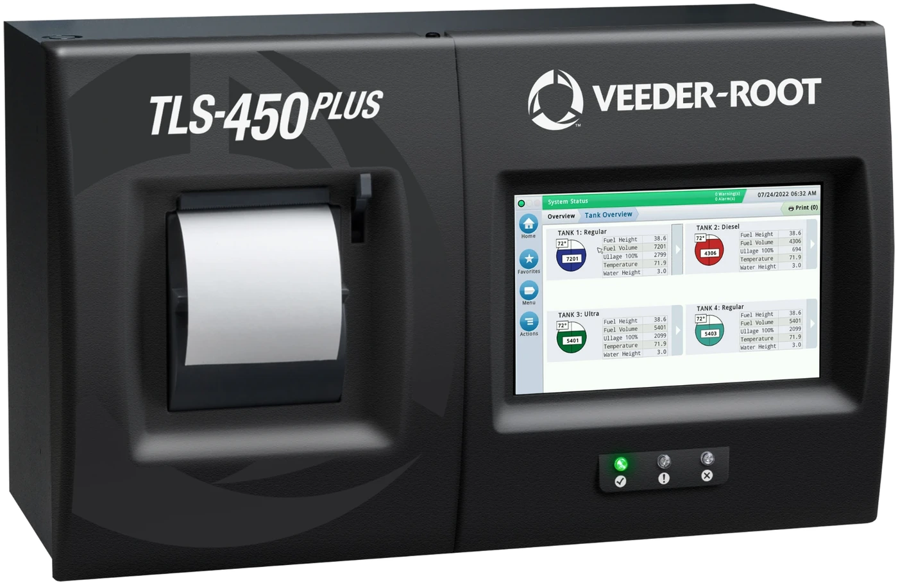

Veeder-Root
Tank Gauging Console — TLS-450 PLUS · connected, secure, compliant
The flagship console, for mid to large sites and for anywhere the tank count is likely to grow. Standard configuration carries up to 64 inputs and expands to 256, so a site adds tanks and sensors rather than replacing the console. An 8″ colour WVGA touchscreen fronts it, and against the previous generation of tank gauge it brings five times the processing speed, eight times the memory and twice the data storage. Static tank testing is standard; continuous statistical leak detection and pressurised line leak detection are ordered as options. Inventory, alarms and diagnostics can be reached from a phone, a tablet or a browser, so a site is checked — and often resolved — without anyone driving to it.
- Workflow Wizard configuration
- TLS-XB expansion boxes
| Inputs, standard | 64 |
| Inputs, expanded | 256 |
| Lines leak tested | Up to 15 |
| Display | 8″ colour WVGA touchscreen |
| Stored data | Three years |
| Network | Switched Ethernet, SSL |
Remote access
PLUS VIEW appRemote View appWeb-enabled